Гимнастика для ума.
В сборнике представлен материал, который может быть полезен педагогам (воспитателям, учителям), использующим в своей работе здоровьесберегающие технологии. Специальные «кинезиологические упражнения», которые могут быть применены для успешного развития и обучения как ребенка, так и взрослого, способствуют развитию межполушарной специализации и межполушарного взаимодействия. Они легли в основу данного сборника. Сборник представляет собой комплекс упражнений, напоминающих обычную зарядку, которые могут быть использованы во время занятия, урока (как средство переключения внимания, активизации деятельности), они достаточно просты в исполнении.
Кинезиология«Кинезиология – наука о развитии умственных и творческих способностей через определённые двигательные упражнения». Благодаря этим упражнениям создаются новые нейронные сети и происходит качественное улучшение эффективности взаимодействия полушарий мозга. Повышается уровень развития.
Практическая часть
I.Кинезиологические упражнения(упражнения основаны на переходе из одной позиции в другую)
1.«Кулачки – ладошки»
Ладони лежат на столе, тыльной стороной вверх, ритмично сжимаем ладони в кулаки, разжимаем (ладони), сжимаем, разжимаем.
Усложнение: - одна рука-кулак, вторая- ладонь, одновременно меняем- первая –ладонь, вторая кулак, ритмично одновременно меняем положение, доводя до автоматизма; - ладонь, ладонь, кулак, кулак. Ладони превращаем в кулаки не одновременно, а поочередно, ритмично, доводя до автоматизма. Вначале образец взрослого необходим, затем постепенно пытаемся предложить ребенку продолжить выполнение упражнения самостоятельно.
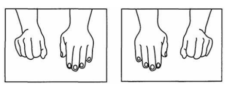2.«Кулачки – ладошки в воздухе»
Упражнение по типу предыдущего, но обе руки расположены вертикально и движения происходят- удерживая руки на весу.
3.«Кулак – кольцо»
Одновременно двумя руками руки совершают следующие действия: кулак- кольцо (большой и указательный пальцы), кулак-кольцо (большой и средний пальцы), кулак- кольцо (большой и безымянный пальцы), кулак- кольцо (большой палец и мизинец), затем в обратном направлении.
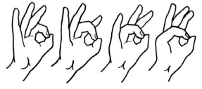4.«Кастрюлька – крышечка»
Одна рука в кулаке вертикально («кастрюлька»), другая - «крышечка» - ложится на кастрюльку, поменяйте положение рук с «точностью до наоборот». Действия четкие, ритмичные, доводим до автоматизма.
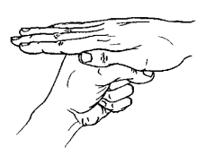5.«Лайк – кольцо»
Одна рука – в кулаке, большой палец вверх (лайк), вторая рука- кольцо из большого и указательного пальца, хлопок, поменяйте положение рук с «точностью до наоборот».
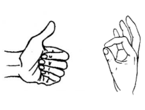6.«Зайчик – кольцо»
На одной руке пальцы в кулачок, выдвинуть указательный и средний пальцы и развести их в стороны. На второй руке кольцо из большого и указательного пальца. Хлопок, поменяйте положение рук с «точностью до наоборот».
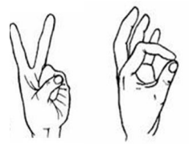7.«Лесенка»
Для этого упражнения нужны большой и указательный пальцы на обеих руках. Соединяем большой палец с указательным (кончиками), затем вторые пары соединяем, а первые разъединяем, получается, как будто пальцы шагают по ступенькам.
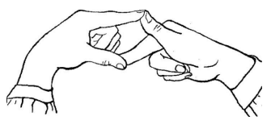8.«Два пальца»
На одной руке показываем мизинец, на другой указательный палец, хлопок, меняем положение рук, теперь на одной руке указательный палец, на другой мизинец.
9.«Яблочко и червячок»Рука в кулаке (яблоко), большой палец вверх – это червячок, червячок то спрятался в яблоко (убираем палец в кулак), то показался (достаем). Вначале ребенок делает одновременно на обеих руках- червячки спрятались, показались. Затем поочередно- на одной руке спрятался, на другой показался. Усложняем через добавление хлопка.
10.«Блинчики»Ладони лежат на столе. Одна ладонь лежит тыльной стороной вверх. Начинаем «переворачивать блинчики»- одновременно меняем положение рук. Усложнение- на счет 3- блинчик заворачиваем- превращаем в кулачок.
11.«Домик»Соединить концевые фаланги выпрямленных пальцев рук. Пальцами правой руки с усилием нажать на пальцы левой руки и наоборот. Отрабатывать эти же действия на каждой паре пальцев отдельно.
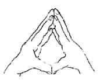12.«Лезгинка»
Левую руку сложите в кулак, большой палец отставьте в сторону, кулак разверните пальцами к себе. Правой рукой прямой ладонью в горизонтальном положении прикоснитесь к мизинцу левой.
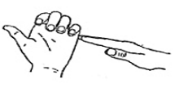13.«Дом – ёжик – замок»
Дом – пальцы рук соединить под углом, большие пальцы соединить, ёжик – поставить ладони под углом друг к другу, расположить пальцы одной руки между пальцами другой руки, замок – ладони прижать друг к другу, пальцы переплести.
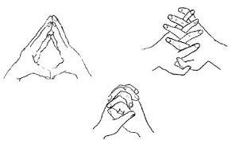14.«Гусь-курица-петух»
Гусь – ладонь согнуть под прямым углом, пальцы вытянуть и прижать друг к другу, указательный палец согнут и опирается на большой; курочка – ладонь немного согнуть, указательный палец упирается в большой, остальные пальцы накалываются друг на друга в полусогнутом положении; петух – ладонь поднять вверх, указательный палец опирается на большой, остальные пальцы растопырены в сторону и подняты вверх – это «гребешок».
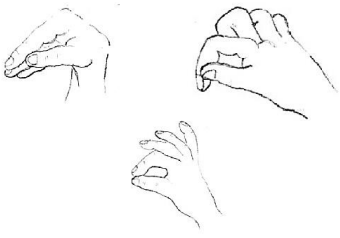15.«Ленивые восьмерки»
Начертить в воздухе знак бесконечности сначала левой рукой, затем правой рукой (ладони в кулак, из кулака вверх большой палец), затем двумя руками одновременно (глаза следят за большими пальцами рук).
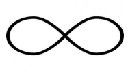16.«Цепочка»
Поочередно перебирать пальцы рук, соединяя с большим пальцем последовательно указательный, средний и т. д. Упражнение выполняется в прямом (от указательного пальца к мизинцу) и в обратном порядке (от мизинца к указательному пальцу). Вначале упражнение выполняется каждой рукой отдельно, затем вместе.
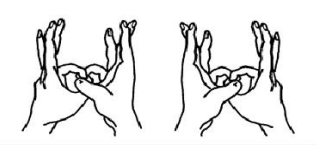Межполушарное взаимодействие.
- Межполушарное взаимодействие — особый механизм объединения левого и правого полушарий в единую интегративную, целостно работающую систему, формирующуюся под влиянием как генетических, так и средовых факторов.
- За что отвечает правое полушарие:
- обработка невербальной информации, эмоциональность;
- музыкальные и художественные способности;
- ориентация в пространстве;
- способность понимать метафоры (смысл пословиц, поговорок, шуток и др);
- обработка большого количества информации одновременно, интуиция;
- воображение;
- отвечает за левую половину тела.
- За что отвечает левое полушарие:
- логика, память;
- абстрактное, аналитическое мышление;
- обработка вербальной информации;
- анализ информации, делает вывод;
- отвечает за правую половину тела.
Только взаимосвязанная работа двух полушарий мозга обеспечивает нормальную работу всех психических процессов.
II.Упражнения для развития крупной моторики.
| «Ухо – нос» | Правая рука касается кончика носа, левая – мочки правого уха. Одновременно отпустить ухо и нос, хлопнуть в ладоши, затем поменять положение рук. |
| «Ножницы» | Перекрестные движения руками перед собой, меняя правую и левую руки. |
| «Колено – локоть» | Стоя. Поднять и согнуть левую ногу в колене, локтем правой руки дотронуться до колена левой ноги, затем тоже с правой ногой и левой рукой. Повторить упражнение 8–10 раз. |
| «Перекрестная ходьба» | Медленная перекрестная ходьба, при выполнении которой дети попеременно касаются правым локтем левого колена и левым локтем – правого с обязательной фиксацией положения «локоть – колено». Как варианты: пальцы обеих рук смыкаются в замок то под правым, то под левым приподнятым коленом; -правая ладонь касается левой коленки и наоборот. |
| «Перекрёстное марширование» | 1-й этап. На счёт 1-12 ребёнок медленно шагает,
попеременно касаясь то правой, то левой рукой
противоположного колена (перекрёстные движения).
2-й этап. Далее на счёт 1-12 ребёнок шагает, но уже
касаясь одноимённого колена (односторонние
движения).
Повторить 1-й, 2-й, закончить 1-м этапом (перекрёстными движениями) |
| «Ёжик» | Встать на четвереньки и ползти, не задевая расставленные предметы на полу. Руки ставить крест- накрест». |
| «Прыжки на месте» |
Выполняются с одновременными движениями руками и ногами: 1. Ноги вместе – руки врозь, ноги врозь – руки вместе. 2. Ноги вместе – руки вместе, ноги врозь – руки врозь. 3. Ноги врозь и ноги вместе. 4. Ноги врозь и ноги перекрещены – поочерёдно правая и левая нога впереди. 5. То же, но с аналогичным движением рук, вытянутых прямо перед собой. (цикл прыжков повторить несколько раз) |
| «Парад» | Марширование на счёт «раз, два, три, четыре». В первом цикле шагов хлопок руками на счёт «раз», во втором цикле – хлопок на счёт «два», в третьем цикле хлопок на счёт «три», в четвёртом цикле – хлопок на счёт «четыре». Повторить несколько раз. |
| «Змейка» | Ходьба, затем бег «змейкой» (ноги перекрещиваются) с изменением направления движения по команде взрослого (поворот кругом во время бега). Усложнение – ходьба или бег на носках. |
| «Дышим носом» | Исходное положение стоя. Дыхание только через левую, потом только через правую ноздрю (при этом правую ноздрю закрывают большим пальцем правой руки, остальные пальцы смотрят вверх, левую ноздрю закрывают мизинцем правой руки). Дыхание медленное, глубокое. |
| «Прыжки с поворотом и без него» | 1.Прыжок с поворотом на 180 2. Прыжок назад, прыжок вперед 3. Прыжок влево, прыжок вправо |
| «Мельница» | Рука и противоположная нога вращаются круговыми движениями сначала вперед, затем назад, одновременно с вращением глаз вправо, влево, вверх, вниз. Время выполнения 1-2 минуты. Дыхание произвольное. |
| «Робот» | Встать лицом к стене, ноги на ширине плеч, ладони лежат на стене на уровне глаз. Передвигаться вдоль стены вправо, а затем влево приставными шагами, руки и ноги должны двигаться параллельно, а затем передвигаться, используя противоположные руки и ноги. |
| «У тети Авдотьи четыре сына» | У тети Моти четыре сына, Четыре сына у тети Моти. Они не пили, они не ели, А только пели один куплет - ... Когда куплет произносится в первый раз, в последней строчке добавляется: "правая рука", затем дети повторяют куплет, непрерывно потряхивая правой рукой. Таким образом, после каждого повтора добавляется по новому движению. В конце получается: "правая рука, левая рука, правая нога, левая нога, голова, язык..." Эту игру можно проводить в кругу. Все участники (вместе с ведущим) хором произносят слова, одновременно показывая движения. |
| "Растяжка по осям" | Лежа на спине. Общее напряжение тела. Расслабление. Напряжение и расслабление по осям: верх – низ (напряжение и расслабление только верхней половины тела, затем – нижней), лево – право напряжение и расслабление левой, затем правой половины тела). |
| "Звезда" | Дети ложатся в позу "звезды" - слегка разведя руки и ноги, а затем выполняют растяжки аналогично линейным, но по диагонали. Оттягивается пятка правой ноги и левая рука по диагонали, при этом левая нога и правая рука расслаблены. Расслабиться на выдохе. Затем то же выполняется по другой диагонали. |
| "Лучики" | Лежа на спине. Поочередное напряжение и расслабление шеи, спины, ягодиц, правого плеча, правой руки, правой кисти, правого бока, правого бедра, правой ноги, правой стопы,; левого плеча, левой руки, левой кисти, левого бока, левого бедра, левой ноги, левой стопы. |
| "Кошечка" | Из положения лежа встать на четвереньки, опираясь на ладони и колени. На вдохе прогнуть позвоночник вниз, на выдохе спину прогнуть вверх, подбородок прижать к груди, зашипеть. |
| «Бревнышко» | Вытянуться всем телом и несколько раз перекатиться всем туловищем направо, затем налево, как «бревнышко». |